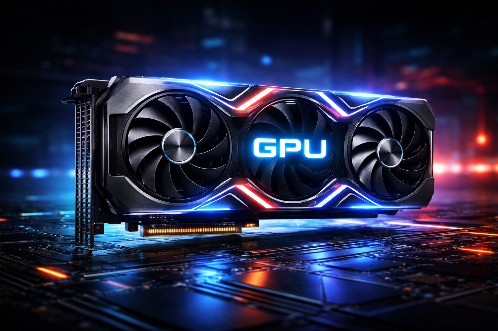

“Powering the Brain of Technology”
Dive into the core components that make computers think, process, and perform.
“Interactive visuals, quizzes & real-world explanations included”
Dive into the core components that make computers think, process, and perform.
“Interactive visuals, quizzes & real-world explanations included”
Unlock next-level performance with advanced GPU technology designed for high-speed rendering, real-time processing, and immersive visual experiences.
A powerful GPU enhances graphics quality, reduces lag, and accelerates complex tasks. Whether you're gaming, editing videos, or training AI models, it ensures smooth, high-performance computing every time.
